Chapter 2 · Part 1 — The Monster
crawled through a hole in the floor.
Wow. The was filled with . everywhere. Very old with dusty covers. New with shiny, bright covers.
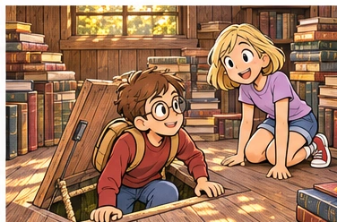
“. can far, far away,” . She was out the window.
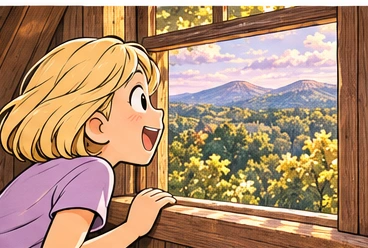
out the window with her. Down below were the tops of the other trees. In the distance he saw the Frog Creek . The elementary school. The park.
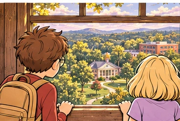
in the other direction.
“’s our house,” she .
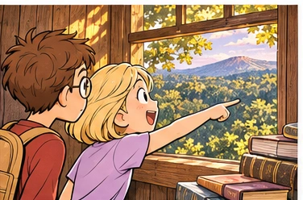
enough. was their white wooden house with the green porch. Next door was their neighbor’s black dog, Henry. He very .
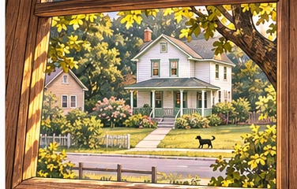
“Hi, Henry!” .
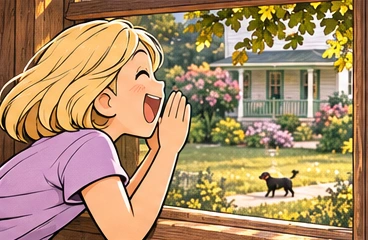
“Shush!” . “’re not supposed to be up here.”
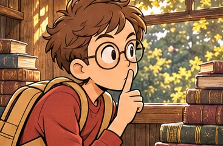
He around the again.
“I wonder who owns all these ,” he . He noticed were sticking out of many of them.
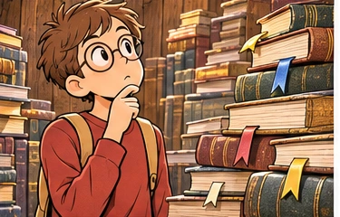
“I like this one,” . She a book with a on the cover.
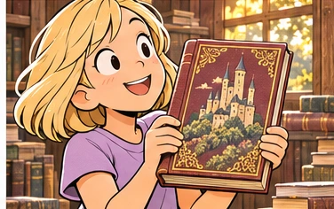
“Here’s a book Pennsylvania,” . He to the page with the bookmark.
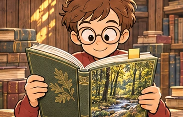
“Hey, ’s a of Frog Creek in here,” . “It’s a of these !”
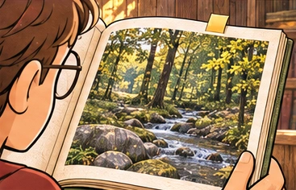
“Oh, here’s a book for ,” . She a book . A blue silk bookmark was sticking out of it.
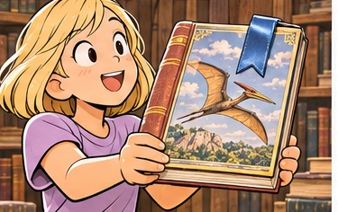
“Let me it.” set down his grabbed the book from her.
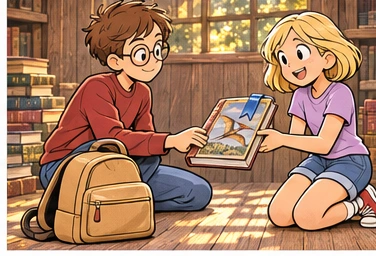
“ at one, I’ll at the one castles,” .